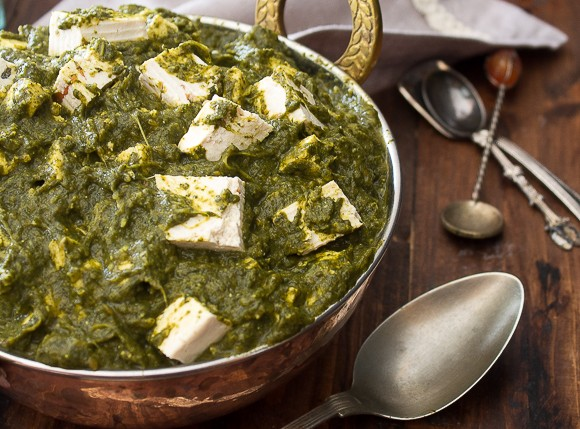

...
Spinach Curry
Spinach curry
Homepage

Description
This is a spinach curry dish. A similar dish is known as palak paneer. But this version does not use paneer(a type of cheese) it uses tofu. It's a great dish to eat tons of greens without realizing it.
Ingredients
- Whole cumin seeds
- Mustard seeds
- Cumin powder
- Coriander powder
- Spinach
- Tofu
- Garlic
- Onions
- Olive oil
- Salt and pepper
- Lemon
Steps
- Crush the garlic.
- Cut the onion into slices.
- Toast the mustard seeds and the whole cumin seeds in a pan until fragrant slightly golden brown.
- Add olive oil to the pan and after a moment add the sliced onions.
- Cook the onions for ten minutes.
- Mince the garlic.
- Add the rest of the spices and the garlic for a minute.
- Add spinach in bunches until everything cooks down.
- Turn off the heat and use an immersion blender to blend everything down.
- Cut the tofu into cubes and put into the curry.